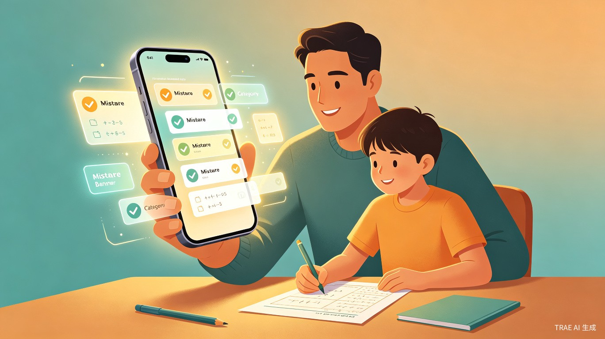
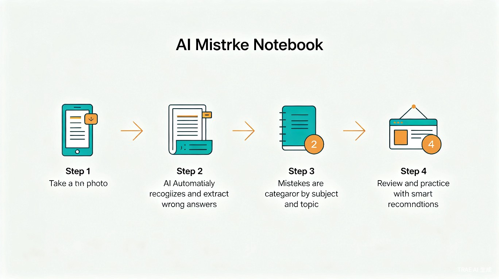
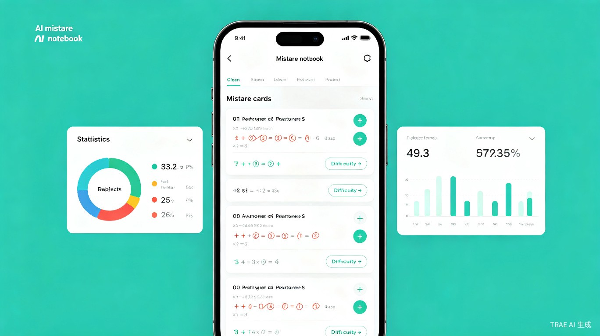

AI 错题本
拍照自动整理孩子的错题
用 AI 视觉识别技术，让家长从繁琐的手抄错题中解放出来，一键拍照、智能归类、高效复习。
为什么要做 AI 错题本？
每位家长都经历过这样的场景：孩子带回家的试卷和作业本上满是红叉，家长需要手动抄写每一道错题，整理成错题本供孩子复习。这个过程耗时、低效、容易出错，而且手抄的错题往往缺乏结构化的分类，复习时难以聚焦薄弱知识点。
AI 错题本是一款面向中小学生家长的智能错题管理工具。家长只需用手机拍照，AI 自动识别试卷中的错题，提取题目内容、学生答案和正确答案，并按学科、知识点、难度自动归类，生成结构化的电子错题本。
「把创意丢给 TRAE Work，3–5 分钟就帮你生成一份完整的创意提案。」
四大核心能力
拍照识别
对准试卷拍照，AI 自动定位并提取错题，支持手写体和印刷体混合识别。
智能归类
自动按学科、章节、知识点分类，打上难度标签，构建知识图谱。
数据分析
可视化呈现错题分布和薄弱环节，帮助家长精准了解孩子的学习状况。
智能复习
基于艾宾浩斯遗忘曲线，自动安排复习计划，推送同类题目巩固练习。
四步完成错题整理
拍照上传
打开 App，对准试卷或作业本拍照
AI 识别
自动提取错题、答案和解析
智能归类
按学科和知识点自动分类整理
高效复习
生成复习计划和同类练习题

目标用户与痛点分析
核心用户群体
中小学生家长（尤其是小学三年级至初中阶段），以及自主管理错题的中学生。这个群体在中国约有 1.5 亿 人，覆盖了 K12 教育中最核心的辅导场景。
典型使用场景
- 日常作业批改后：孩子完成作业，家长批改发现错题，需要及时记录
- 考试结束后：期中、期末考试后，大量错题需要系统整理
- 周末/考前复习：需要快速回顾薄弱知识点，查漏补缺
当前痛点
- 手抄错题耗时巨大：一道数学题手抄平均需要 5–10 分钟，一次考试可能有 10+ 道错题
- 分类混乱难查找：手写错题本缺乏索引，复习时翻找困难
- 无法追踪进步：纸质记录无法统计错题趋势，不知道哪些知识点反复出错
- 复习缺乏针对性：没有数据支撑，复习只能凭感觉，效率低下
产品界面概念

产品形态为移动端 App（iOS / Android），核心界面包括：拍照入口、错题列表、知识图谱分析、复习计划看板。设计风格简洁清爽，操作流程极简，确保家长零学习成本上手。
为什么这个创意值得做？
效率提升
将每道错题的整理时间从 5–10 分钟缩短到 10 秒（拍照即完成），一次考试的错题整理从 1 小时压缩到 5 分钟以内。家长可以将节省下来的时间用于更有价值的辅导互动。
商业价值
K12 教育市场规模超过 3000 亿元，家长对学习工具付费意愿强烈。产品可从基础功能免费 + 高级分析订阅的模式切入，叠加同类题库推荐、打印错题本等增值服务，具备清晰的商业化路径。
社会价值
缩小教育差距——AI 错题本让不会辅导作业的家长也能帮助孩子高效学习。通过数据化分析，让每个孩子都能获得个性化的错题复习方案，推动教育公平与因材施教。
技术可行性
AI 错题本的核心技术栈已经成熟：
- OCR 文字识别：基于深度学习的 OCR 技术（如 PaddleOCR、Tesseract）已能高精度识别手写体和印刷体
- 错题定位：通过红叉/红圈标记检测 + 试卷版面分析，自动定位错题区域
- 知识点分类：利用 NLP 技术对题目文本进行学科和知识点分类，可结合教材知识图谱提升准确率
- 复习推荐：基于艾宾浩斯遗忘曲线算法，结合错题频率和知识点关联度，生成个性化复习计划
产品初期以微信小程序形态快速验证，降低用户使用门槛；后期迭代为独立 App，加入更多 AI 能力和社交功能。
AI 错题本 —— 让每一道错题都不被辜负
拍照即整理，智能归类，精准复习。用 AI 的力量，把家长从繁琐的抄写中解放出来，把时间还给陪伴。